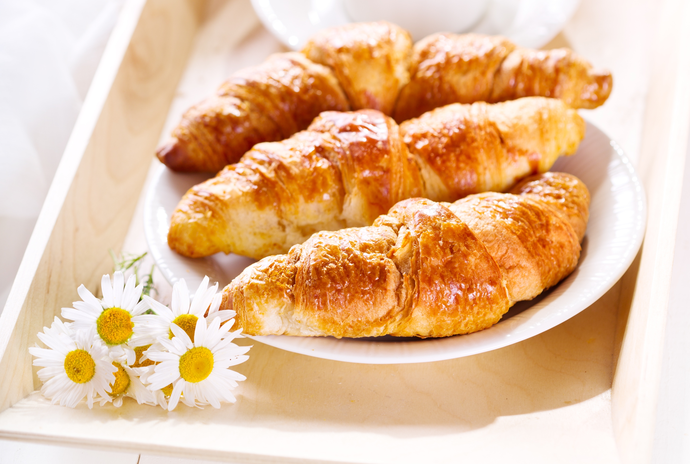
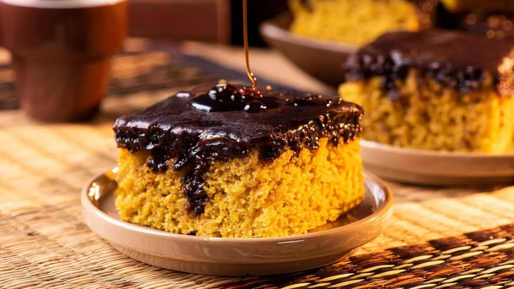
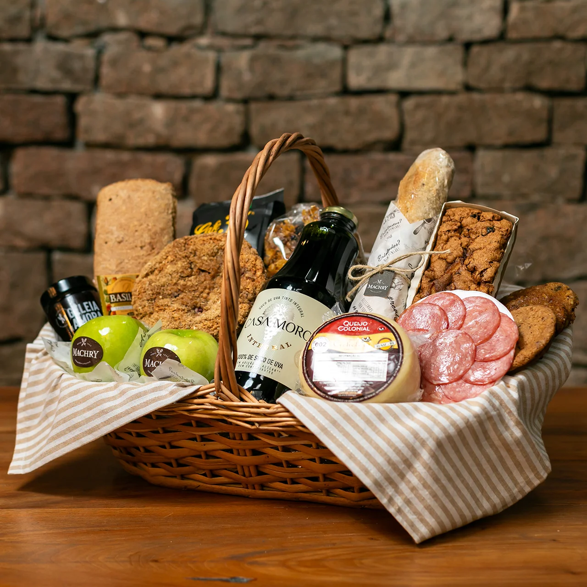

Fermentação 24h
Fermentação 24h
Pão Rústico de Fermentação Natural
Casca crocante dourada, miolo incrivelmente aerado e aroma marcante.
Unidade (aprox. 500g)
R$ 24,90
Descubra nossa linha artesanal de pães especiais de fermentação natural, confeitaria fina, salgados assados na hora e uma conveniência completa para você.
Navegue por nossas seleções preparadas diariamente com ingredientes nobres.
Sourdough, francês tradicional, ciabatta e baguetes de fermentação natural.
Ver opções →Croissants amanteigados, empadas nobres, quiches e folhados gourmet.
Ver opções →Cafés especiais moídos na hora, sucos naturais e laticínios frescos.
Ver opções →Vinhos, queijos nobres, antepastos artesanais e itens de mercearia premium.
Ver opções →Uma amostra dos pães especiais e delícias que você pode encomendar com facilidade.
Fermentação 24h
Casca crocante dourada, miolo incrivelmente aerado e aroma marcante.

Pura ManteigaMassa folhada francesa pura manteiga, textura levíssima e crocância inigualável.

Chocolate BelgaExtremamente fofinho, coberto com camadas generosas de ganache de chocolate.

Kit EspecialSortimento nobre com baguetes, mini croissants, pães rústicos e queijos artesanais.